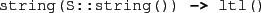
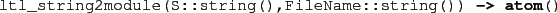
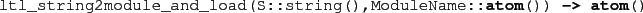
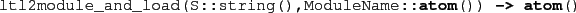

Ltl2Buchi: Translation LTL Properties to Büchi Automatons
The Ltl2Buchi tool, due to Hans Svensson at the IT University of
Gothenburg, is used to translate LTL formulas into Büchi automata.
These are commands available in the
command loop of the model checker,
in addition to the normal Erlang
functions.
The following functions are available in the module
@mce_ltl_parse@
for translating LTL formulas into Büchi automatons:
-

Parses an LTL formula.
-

Parses an LTL formula, converts the LTL formula into a Büchi automaton,
and stores the automaton in @FileName@. Returns
the name of the generated module.
-

Parses an LTL formula, converts the LTL formula into a Büchi automaton,
and stores the automaton in a temporary location. Returns
the name of the generated module (@ModuleName@).
-
![\begin{lstlisting}[language=erlang]
ltl2module(L::ltl(),FileName::string()) -> atom()
\end{lstlisting}](img106.png)
Converts the LTL formula into a Büchi automaton,
and stores the automaton in @FileName@. Returns
the name of the generated module.
-

Converts the LTL formula into a Büchi automaton,
and stores the automaton in a temporary location. Returns
the name of the generated module (@ModuleName@).
Subsections
2010-07-05